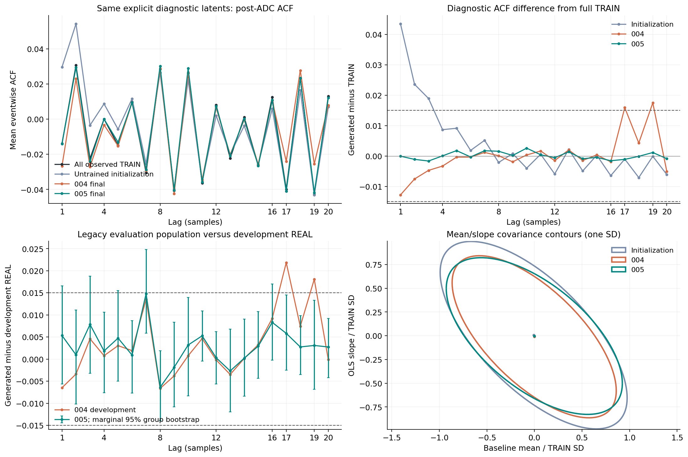
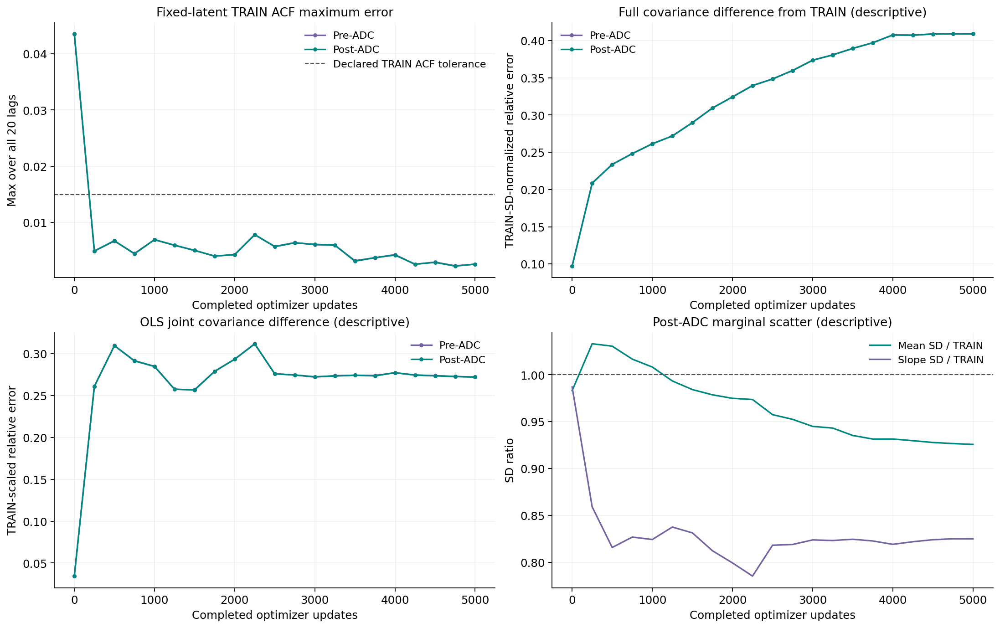
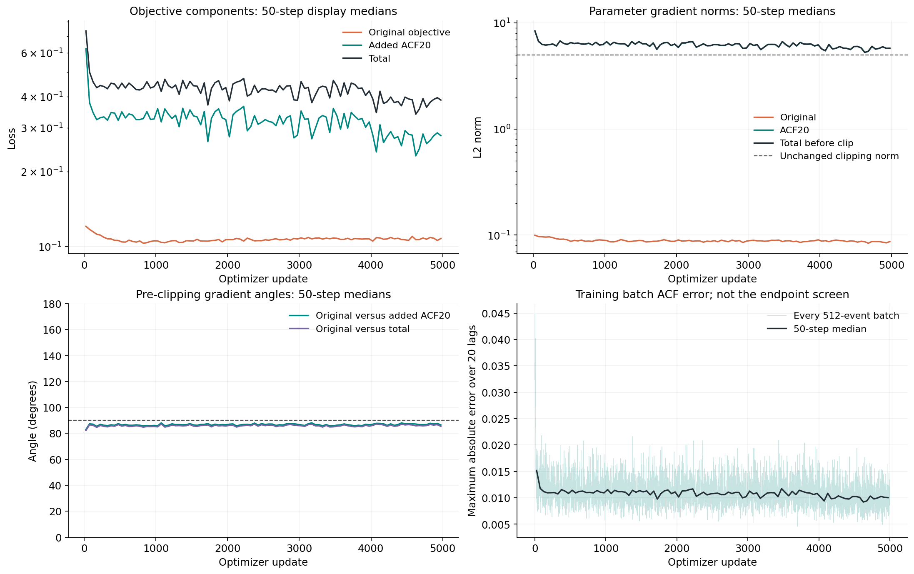
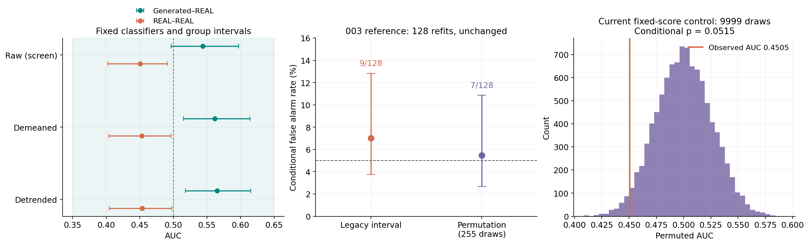

N01 005：ACF 目标覆盖修复
候选开发筛查满足要求；legacy 总门：仍未通过
本轮最多支持 100 点观测噪声候选的开发筛查结论。旧阴性区间失败保留；当前测量状态仍不确定，未开展独立采集验证，正式脉冲训练为 0。
改善存在代价：同一诊断群对 TRAIN 的完整协方差相对误差由 0.3375 增至 0.4090，不是所有联合统计都变好。该项预先仅作机制描述，没有事后增设通过门。
已满足进入只读 480 点接口设计检查的条件；设计检查结果另见范围说明。
5,000本轮实际噪声更新
21,047全部合法 TRAIN 事件
1,200评价分类器更新（另计）
0正式脉冲响应更新
问题、唯一改动与固定终点
保留 004 的 ObservedBaselineNoiseV3、全 TRAIN 初始化、随机流、512 批量、Adam 和 5000 次固定预算。原 32 维分布损失保持不变，只新增全 20 阶 ACF 目标：0.5 × (mean(e²) + max(e²))，其中 e=(生成批次逐事件 ACF 均值 − 全 TRAIN 固定目标)/0.015。每事件先减均值、按 100−lag 求乘积均值，再除以该事件方差并保留原 ADC floor。
初始化和 004、005 末点共用独立固定的 8192 个显式随机输入；训练、诊断和评价随机流分开。TRAIN 只有处理后量化观测，没有伪造的模拟前真值。初始化仅作机制对照，未选作替代末点。
| 开发验证指标 | 002 | 004 | 005 | 原要求 |
|---|
| ACF 最大绝对差 | 0.021871 | 0.021852 | 0.014799 | ≤ 0.015 |
| OLS 联合协方差相对误差 | 0.574359 | 0.141929 | 0.089656 | ≤ 0.20 |
| 基线均值散布比 | 0.853831 | 0.890162 | 0.963484 | 0.85–1.15 |
| OLS 斜率散布比 | 0.936983 | 1.004837 | 0.966626 | 0.85–1.15 |
| 完整 100 点投影距离比 | 0.989586 | 1.001886 | 1.020613 | ≤ 2.0 |
固定诊断群对 TRAIN 的最大 ACF 差：004 为 0.017509，005 为 0.002596。TRAIN 匹配：True；相对 004 的预声明改善条件：True。开发集超出 0.015 的 lag：[]。

图中 TRAIN 比较使用固定诊断群；开发集比较使用旧评价流程的另一固定生成群。误差条是边际 95% 分组 bootstrap；联合误差带另存于不确定性回执，均未用作追加验收门。椭圆只表示模拟样本的一倍标准差协方差轮廓。
初始化与协方差轨迹

每 250 次更新使用同一批随机输入，保存量化前后完整 100×100 协方差、OLS 联合统计、均值和 RMS。协方差误差使用冻结 TRAIN 的时间标准差进行归一化，属于机制描述，不是结果出现后新增的通过门。
未训练初始化的量化后 TRAIN 最大 ACF 差为 0.04355，完整协方差相对误差为 0.0972。它说明协方差初始化本身不保证逐事件归一化 ACF 已匹配；初始化仅作对照，未选为替代终点。004→005 的 TRAIN OLS 联合误差为 0.2678→0.2719，基本未改善；这与上表开发群的 OLS 改善属于不同参照群。
损失与梯度

所有 5000 次更新的原始逐步数据均保留；图中 50 步中位数只便于显示。主夹角比较旧目标与新增 ACF20 目标，附加夹角比较旧目标与总目标；均在裁剪前、同一参数和批次下计算。零范数夹角记为未定义。小批量误差不用于代替固定终点评价。
新增项/旧目标梯度范数比的全程中位数为 70.1；两者夹角中位数 86.74°，超过 90° 的更新占 11.46%。新增项对更新方向影响很大，但这些描述不足以单独证明因果冲突或模型族极限。训练设置没有据此调整。
候选质量、legacy 门和控制校准
候选 10 项检查：10/10 满足；失败项：[]。legacy 失败项仍完整保留：['negative_control_interval_contains_half']。
| 候选检查 | 结果 |
|---|
| mean_location | 满足 |
| mean_scatter | 满足 |
| rms_quantiles | 满足 |
| acf | 满足 |
| spectrum | 满足 |
| ols_slope | 满足 |
| ols_joint | 满足 |
| full100 | 满足 |
| classifier_point | 满足 |
| classifier_interval | 满足 |
原始 generated–REAL AUC=0.543564，95% 分组区间 [0.496638, 0.597291]；实用容差筛查不等于统计分布相等。REAL–REAL AUC=0.450516，区间 [0.402639, 0.491460]，三种视图均与 004 分数及标签逐位一致。

003 的 9/128 和 7/128 校准原样引用，后者使用每控制 255 次置换；两者不足以证明方法优劣。本轮只在同一固定 raw 控制分数上做一次 9999 次组内置换，p=0.051500；其 Monte Carlo 区间描述 K/9999 的数值不确定性，不是新的跨采集校准。测量状态仍为 measurement_uncertain_single_exposed_acquisition。
点估计与不确定性
开发集最差 lag 7 差为 0.014799，仅比 0.015 门限低 0.000201；边际 95% 分组区间为 [0.005881, 0.024777]，并未整体落在 ±0.015 内。该区间按预登记只作描述，不改判候选点值筛查，也不证明等效。raw 控制条件置换 p=0.0515，其尾概率的 Monte Carlo Wilson 区间约 [0.04725, 0.05591] 跨过 0.05；不能据此说控制已修复。
支持范围与可复核交付
100×100 观测协方差没有指定完整 480 点协方差或跨窗相关性。当前模型继续拒绝 480 点；本轮未做正式确定性/随机响应两臂训练，未做新的 480 点灵敏度模拟，未取得独立采集验证。后续探索须声明长时程假设和接口，再用实际完整响应结果检验 Q、PSD 与波形方差。
已重新打开检查点并逐位重放：1,024 条显式随机输入结果、三模型共 24,576 条配对诊断波形、10,240 条评价生成波形、六个分类器共 3,072 个分数。另独立复算全部 5,000 条损失/梯度日志、2,000 次 ACF bootstrap 和 9,999 次条件置换；复现性不构成科学通过。
20 阶误差 CSV · 分离评价回执 · 分组不确定性 · 机制统计 · 100/480 支持范围与后续设计 · 独立重放 · 预登记协议